フィレンツェから日帰りで行く、トスカーナワインツアー。
トスカーナ地方では、世界中で愛される「キャンティワイン」の魅力をご堪能いただけます。
試飲や購入はもちろん、トスカーナ地方の素晴らしい景観とともに、チーズとの相性抜群なキャンティワインの味を飲み比べしていただくことで、あなたのお気に入りの一本に出会えるかもしれません。


13:00 モンテルゴ広場バス停前集合
フィレンツェ中央駅の16番ホームから真っすぐ続いている Passaggio Binario 16 という通路を進んでいただければ、モンテルンゴ広場にたどり着きます。
14:30 キャンティ・クラシコ訪問
キャンティ街道を進み、「キャンティ・クラシコ」にて、高品質なイタリアンワインを製造するワイン農場を訪れ、ブルスケッタやサラミ、コールドミートといったワインと合うおつまみと共にお試しいただけます。
16:00 グレーヴェ・イン・キャンティ観光
イタリアで最も重要な「ワインの町」の一つである、グレーヴェ・イン・キャンティへ立ち寄ります。オープンギャラリーや工芸品店が並ぶ街の大広場での散策もお楽しみくださいませ。
17:30 家族経営のワイナリーを訪問
始めにワインセラーと庭園を訪れていただき、4種のワインと、特産品のおつまみとともにテイスティングしていただけます。
19:00 モンテルゴ広場バス停前にてツアー終了
モンテルンゴ広場CAF TOUR & TRAVEL - GRAY LINEのバス停前にて解散。